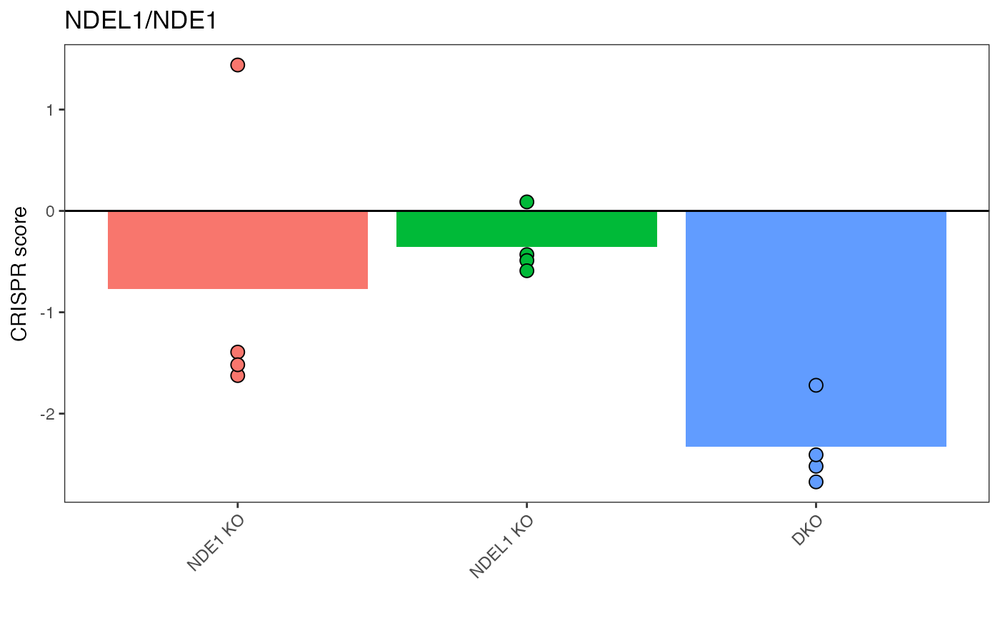

This plot is for when you'd like to examine a target pair specifically – meant to be functionally equivalent to Fig 3b CRISPR scores for representative synthetic lethal paralog pairs. Data shown are the mean CRISPR score for each single KO or DKO target across three biological replicates with replicate data shown in overlaid points.
plot_targets_bar(gimap_dataset, target1, target2, reps_to_drop = "")A special dataset structure that is originally setup using `setup_data()` and has had gi scores calculated with `calc_gi()`.
Name of the first target to be plotted e.g.
Name of the second target to be plotted e.g.
Names of replicates that should be not plotted (Optional)
A ggplot2 bar plot of the specific target's genetic interaction scores.
# \donttest{
gimap_dataset <- get_example_data("gimap") %>%
gimap_filter() %>%
gimap_annotate(cell_line = "HELA") %>%
gimap_normalize(
timepoints = "day"
) %>%
calc_gi()
#> Annotating Data
#>
Downloading: 3.4 kB
Downloading: 3.4 kB
Downloading: 3.4 kB
Downloading: 3.4 kB
#> Downloading: Achilles_common_essentials.csv
#>
|
| | 0%
|
|======================================================================| 100%
#>
|
| | 0%
|
|=============================================== | 67%
|
|======================================================================| 100%
#> Normalizing Log Fold Change
#> Calculating Genetic Interaction scores
# To plot results, pick out two targets from the gi_score table
head(dplyr::arrange(gimap_dataset$gi_score, fdr))
#> # A tibble: 6 × 7
#> pgRNA_target mean_expected_cs mean_observed_cs mean_gi_score target_type
#> <chr> <dbl> <dbl> <dbl> <chr>
#> 1 TIAL1_TIA1 -1.03 -2.13 -1.27 gene_gene
#> 2 ATP6V1C1_ATP6V1C2 -2.24 -2.25 -0.685 gene_gene
#> 3 ASF1A_ASF1B -0.184 -2.28 -1.73 gene_gene
#> 4 CEPT1_CHPT1 -1.19 -2.17 -1.24 gene_gene
#> 5 SEC23B_SEC23A -1.78 -2.06 -0.909 gene_gene
#> 6 SLC20A2_SLC20A1 -1.81 -2.47 -1.08 gene_gene
#> # ℹ 2 more variables: p_val <dbl>, fdr <dbl>
# "NDEL1_NDE1" is top result so let's plot that
plot_targets_bar(gimap_dataset, target1 = "NDEL1", target2 = "NDE1")

# }